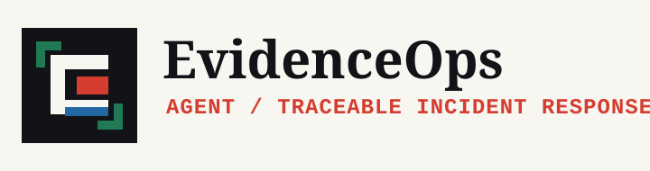
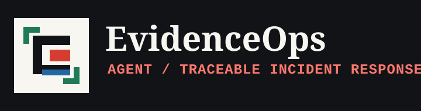
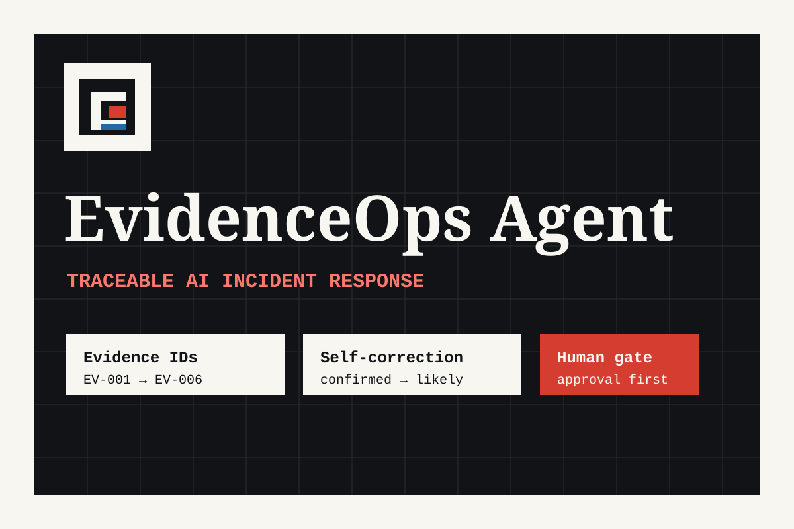
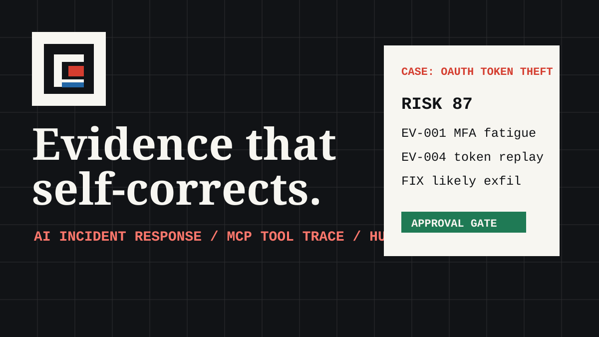

BrandKit / AI Security / Incident Response
Evidence that moves at machine speed and still stands up in review.
EvidenceOps Agent is an explainable AI incident response workspace. This brand portal gives judges a complete identity system: logo assets, color, type, product narrative, interface usage, social templates, and downloadable brand guidance.
CASE ID
OAuth Token Theft
Risk 87 / confidence 91% / approval required

EV-001MFA fatigue
EV-004Token replay
FIXconfirmed → likely exfiltration
Judge Fit
Built directly against the Brand Portals scoring criteria.
The portal is structured so judges can inspect presentation, organization, design quality, consistency, and completeness without hunting through disconnected files.
First-screen story with a clear product promise.
The hero, case card, and evidence trace explain the brand before a judge scrolls.
Assets, system, applications, voice, and transfer path are separated.
Each section answers one practical brand-portal question and links to the right artifact.
A security-native identity, not a generic AI template.
Incident reports, evidence IDs, terminal traces, and approval gates shape the look.
One visual language across product, report, social, and Devpost assets.
Logo, colors, typography, copy rules, and examples use the same forensic system.
Live portal plus downloadable source assets.
Judges can open the website, inspect the repository, and download the complete kit.
Asset Library
Everything a security team needs to ship the brand without improvising.
Primary dark lockup
Use on light paper, white UI, reports, pitch decks, and Devpost thumbnails.
Download SVG{kind=link}

Primary light lockup
Use on dark investigation surfaces, terminal captures, and SOC dashboards.
Download SVG{kind=link}
Symbol
The evidence bracket and signal core work as an app icon, favicon, or avatar.
Download SVG{kind=link}

Devpost cover
Submission-ready cover art focused on the self-correcting incident agent story.
Download SVG{kind=link}
Visual System
Industrial clarity, courtroom evidence, SOC urgency.
The system avoids glossy AI tropes. It borrows from incident reports, chain-of-custody labels, terminal traces, and safety-critical dashboards.
Typography
Instrument Serif for decisive headlines
IBM Plex Mono style labels for evidence IDs, tool calls, timestamps, and audit trails.
Applications
The brand works across product, reports, judging artifacts, and social launch posts.
OAuth token theft against finance-admin
- Risk
- 87
- Confidence
- 91%
- Status
- Human approval required
Confirmed identity compromise and OAuth persistence. Data export is likely, not confirmed.

{
"correction": {
"before": "confirmed exfiltration",
"after": "likely exfiltration"
}
}
Voice
Calm under pressure. Precise under review.
EvidenceOps should never sound magical. The brand voice is senior-analyst clear: cite what is known, label uncertainty, and explain what action needs approval.
“Likely exfiltration; external destination not yet proven.”
“The AI found the attacker and stopped the breach.”
Evidence-linked response briefs that an analyst can defend.
Autonomous destructive containment without approval.
Submission Package
Brand portal, usage guide, product demo, and source assets are ready for review.
BrandKity Transfer
Submission-ready content is mapped for BrandKity if the hackathon requires a BrandKity URL.
The Brand Portals brief appears to expect a BrandKity-hosted BrandKit URL. This portal is the source-of-truth kit; the transfer guide mirrors each section into BrandKity fields without changing the identity system.